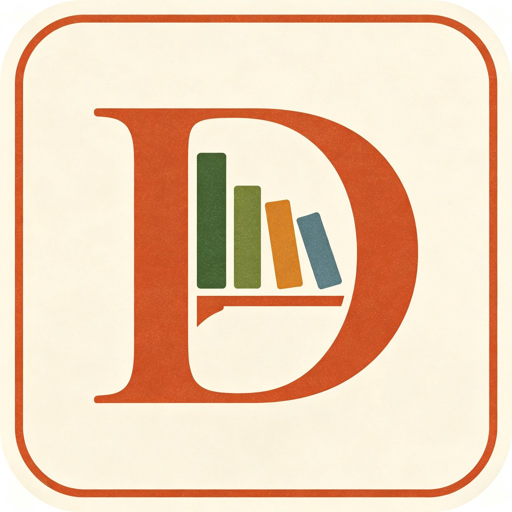

桌面管理
Dashboard
检测中...
--
输入关键词搜索
请输入搜索关键词
围栏总数
--
活跃围栏
收纳文件
--
文件总数
便签数量
--
活跃便签
运行时间
--
服务运行
存储占用
--
--
最近备份
--
备份数量: --
桌面布局图
100%
虚拟桌面
暂无围栏数据
桌面图标: --
快捷方式: --
文件夹: --
文件: --
文件类型分布
暂无文件分布数据
当前配置
暂无配置数据
围栏列表
加载中...
便签
暂无便签
最近活动
快捷键
Alt + Space
全局搜索
Alt + F
新建围栏
Alt + N
新建便签
Alt + Q
退出程序